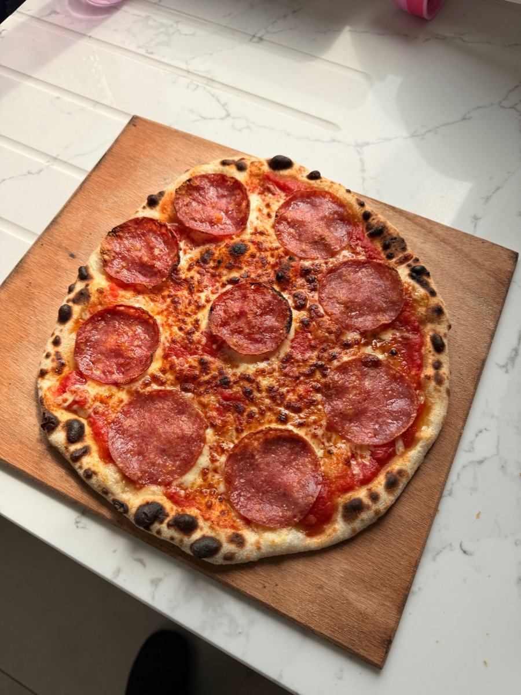
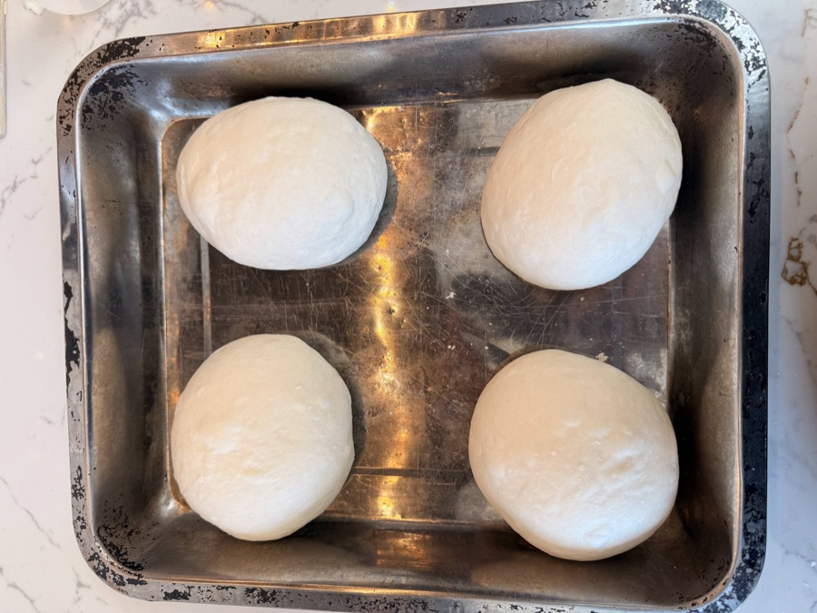
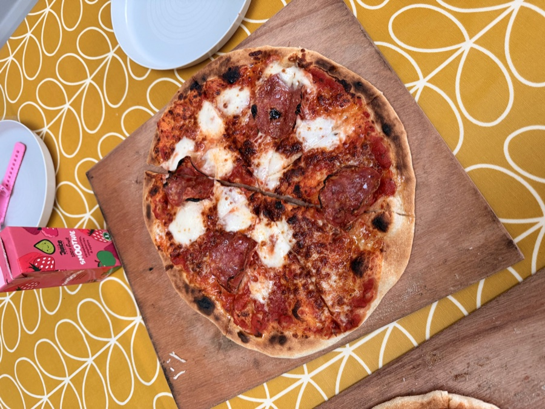

Sourdough Pizza Dough - A Two-Day Cold Ferment Recipe
The difference between good pizza and great pizza is usually the dough, and the difference in the dough is usually time. This recipe spreads the process across two days - a bulk ferment overnight, then balling into individual portions for a second cold rest - and the result is a crust with genuine flavour, proper chew, and a base that actually crisps up rather than steaming through.
It needs a bit of planning, but the hands-on time is minimal. Most of the work is just waiting.

Ingredients (for 4 Pizzas)
- 100g active sourdough starter
- 375g water, room temperature
- 600g strong bread flour or Tipo 00
- 18g fine sea salt
- 10g extra virgin olive oil
Method
Quick Overview
-
Night Before (Day 1 Evening):
Mix dough, rest 30 mins, add oil, 3 stretch and folds, bulk ferment 4-6 hrs, into the fridge overnight.
-
Next Morning (Day 2):
Divide cold dough into individual balls, back in the fridge for at least 6-8 hours.
-
2 Hours Before Eating:
Take balls out of the fridge, leave at room temperature.
-
Dinner Time:
Preheat Ooni for 30+ minutes. Stretch, top, launch. Done in 60-90 seconds.
Night Before: Mix & Bulk
- Mix: In a large bowl, dissolve your 100g active starter into 375g room-temperature water and stir until the mixture looks milky. Add 600g flour and 18g salt and mix until no dry flour remains. The dough will be rough and shaggy. Cover and leave for 30 minutes.
-
Add Oil & Develop: Pour the 10g olive oil over the rested dough and work it in using your hands - fold and press until it's absorbed. It might look like it won't incorporate at first but it comes together after a minute.
Now do 3 sets of stretch and folds, 30 minutes apart. See the technique guide. This builds the structure the dough needs to stretch out later without tearing.
- Bulk & Into the Fridge: After your stretch and folds are done, cover the bowl and leave it at room temperature for another 2-3 hours until the dough has grown by around 50% and looks bubbly. Then cover tightly and move it to the fridge overnight. Leave it whole at this stage - you ball it in the morning.
Morning of Pizza Day: Divide & Ball
-
Divide: Take the cold dough out of the fridge and tip it onto a lightly floured surface. Divide it into 4 portions of roughly 275g each - a kitchen scale makes this quick and accurate.
Shape each portion into a tight, smooth ball. Pull the edges of each piece toward the centre and pinch them together, then flip it over and roll it gently on the counter using a cupped hand to build surface tension. You're looking for a taut, smooth surface with no tears.

-
Second Cold Rest: Place each ball in its own container or on a tray with enough space to spread slightly. Drizzle or brush a little oil around each one to prevent sticking. Cover and put them back in the fridge for at least 6-8 hours.
This second rest is what gives you the distinctive pizza dough texture - springy but extensible, and with enough gas built up to give a proper airy crust.
Before Dinner: Bring to Room Temperature
This step matters more than people expect. Take the dough balls out of the fridge at least 2 hours before you plan to cook. Cold dough is stiff - it fights back when you stretch it and springs back to the centre, making it hard to get thin. More importantly, if the dough goes into a 400°C oven while it's still cold at the core, the base cooks through before the outside properly chars. You end up with a pale, undercooked centre rather than the crispy base you're after. Room temperature dough stretches easily and cooks evenly.
Leave them covered on the counter. They'll puff up slightly as they warm through, which is exactly what you want.
Stretch & Top
On a well-floured surface, press each ball out from the centre using your fingertips, working outwards and leaving a slightly thicker edge for the crust. Once it's about 20cm across, pick it up and let gravity do the rest - hold it by the edges and rotate it slowly, letting the weight of the dough stretch it to around 28-30cm.
Avoid a rolling pin. It works out the air you've spent two days building.
Sauce the base lightly - less than you think - then add your toppings. Keep it balanced. A heavily loaded pizza takes longer to cook and can turn the base soggy before everything else is done.
Cooking in the Ooni
Preheat your Ooni for at least 30 minutes. The stone needs to reach 400°C - use an infrared thermometer if you have one. A cold stone is the most common reason for a pale, soft base.
Launch the pizza on a low flame. The idea is to let the base set against the stone before the top starts browning. Once the base has had 20-30 seconds to grip, turn up the heat and rotate the pizza every 15-20 seconds to char the crust evenly without burning one side. The whole cook takes 60-90 seconds.

Want to Work on Your Pizza Technique?
If you're getting the dough right but struggling with the cook - base colour, stretching without tearing, timing - a coaching session can help you dial it in.
Book a 1:1 Coaching Session →